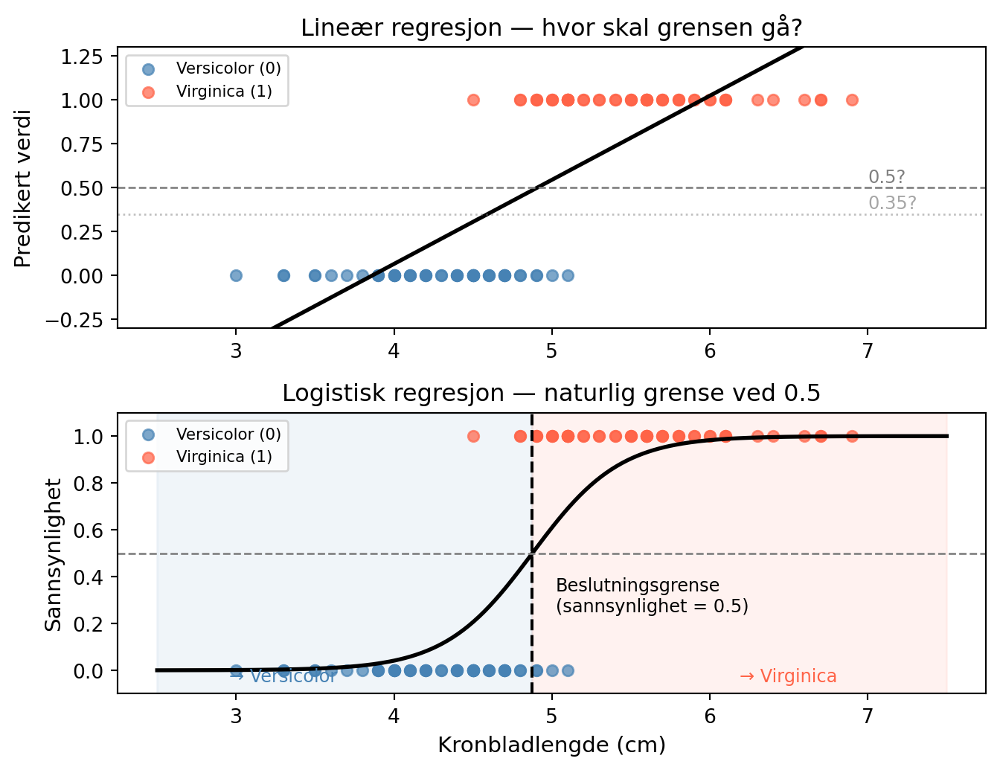
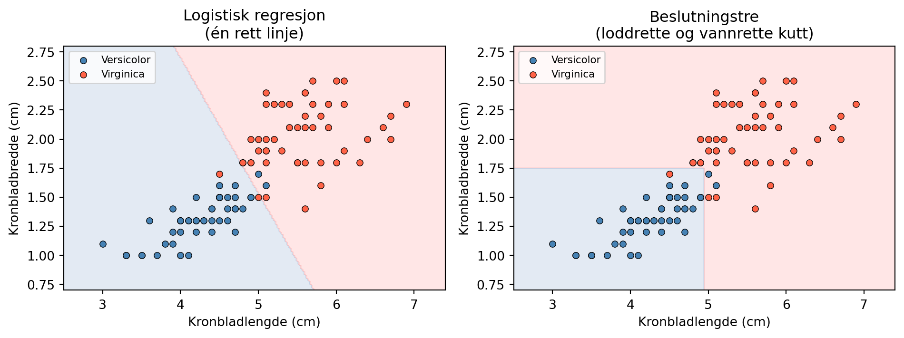
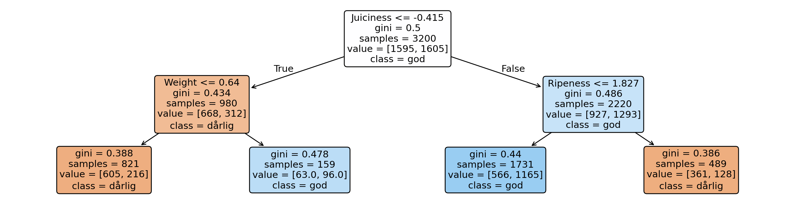
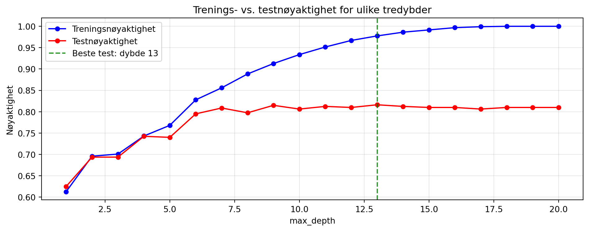
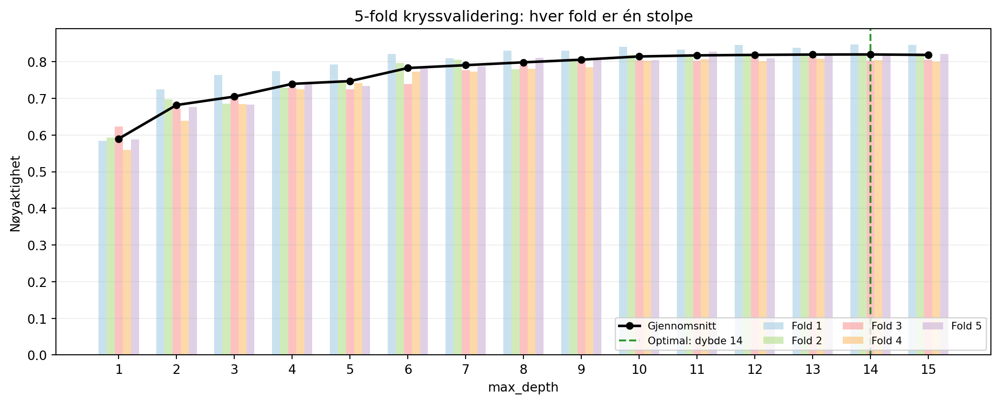
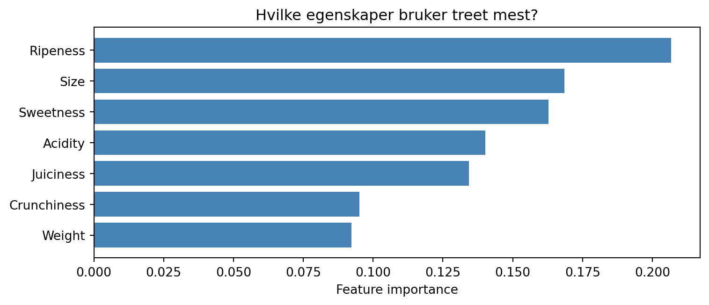
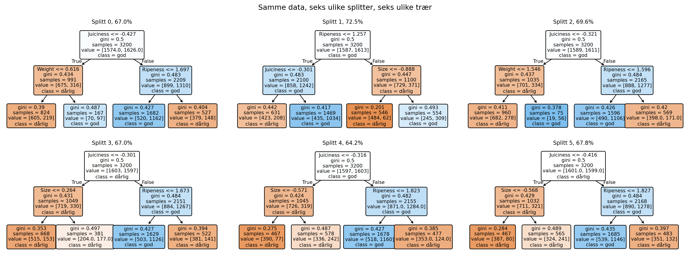

Forelesningsnotat: Beslutningstrær
HON2200
Slide-versjon
Oppvarming: Hvor var vi igjen?
Hva kan dere allerede?
Dere har lært:
- Grunnleggende Python og kodelogikk
- Data i tabeller: filter, gruppe, aggregering
- Litt visualisering med matplotlib
- Lineær og logistisk regresjon
- Etiske problemstillinger i dataanalyse og maskinlæring
De siste 2 ukene: rettferdige algoritmer
I dag: det første nye modellverktøyet siden regresjon.
Note
Veien vår:
Dataanalyse (deskriptiv)
↓ Regresjon (prediktiv)
↓ Algoritmisk rettferdighet
↓ Beslutningstrær ← her
↓ Random forest + ensembler
Fra regressjonslinje til beslutningsgrense
Hva om vi bruker en rett linje til å avgjøre om en blomst er versicolor eller virginica — bare ut fra kronbladlengden?
Lineær regresjon gir verdier utenfor 0 og 1, og ingen naturlig grense. Logistisk regresjon gir sannsynligheter, og da er 0.5 et naturlig skille.
Fra én måling til to
Hva om én måling ikke er nok? La oss bruke to mål — kronbladlengde og kronbladbredde — og se hvordan logistisk regresjon og et beslutningstre tegner grensen forskjellig.

. . .
Logistisk regresjon veier variablene sammen. Grensen er der vektet sum = 0.
Et tre spør om én variabel om gangen:
«Kronbladlengde > 4.8?» → loddrett kutt «Kronbladbredde > 1.7?» → vannrett kutt
Flere kutt → rektangler.
Akt 1: Hva er et tre, og hvorfor trenger vi det?
Tenk deg at vi spiller «20 spørsmål»
Jeg tenker på et dyr. Hva er det beste første spørsmålet?
. . .
Er det et pattedyr? → Ja Er det større enn en hund? → Nei Er det husdyr? → Ja Er det en katt? → Ja!
Et beslutningstre gjør akkurat dette, men med data istedenfor gjetninger.
graph TD
A[Pattedyr?] -->|Ja| B[Større enn hund?]
A -->|Nei| X((Fugl...))
B -->|Nei| C[Husdyr?]
B -->|Ja| Y((Ku...))
C -->|Ja| D((🐱 Katt!))
C -->|Nei| Z((Rev...))
style D fill:#ccf,stroke:#333,stroke-width:2px
Tre begreper om trær
%%{init: {'theme': 'base', 'themeVariables': { 'fontSize': '14px'}}}%%
graph LR
A["🔵 Node<br>Stiller et spørsmål"] -->|"Sant → venstre"| B["🔵 Node<br>nytt spørsmål"]
A -->|"Usant → høyre"| C["🟣 Blad<br>Gir en prediksjon"]
B -->|Sant| D["🟣 Blad<br>Gir en prediksjon"]
B -->|Usant| E["🟣 Blad<br>Gir en prediksjon"]
| Del | Funksjon | Eksempel |
|---|---|---|
| Node | Stiller et spørsmål | Pattedyr? |
| Gren | Svaret | Ja (venstre) / Nei (høyre) |
| Blad | Prediksjon | «Katt!» |
Datasettet: eplekvalitet
Nå vet vi hva et tre er og hvordan det deler rommet. La oss bygge ett fra bunnen av med et nytt datasett.
import pandas as pd
df = pd.read_csv("data/apple_quality.csv").dropna()
df["Acidity"] = pd.to_numeric(df["Acidity"])
df.head(3)| A_id | Size | Weight | Sweetness | Crunchiness | Juiciness | Ripeness | Acidity | Quality | |
|---|---|---|---|---|---|---|---|---|---|
| 0 | 0.0 | -3.970049 | -2.512336 | 5.346330 | -1.012009 | 1.844900 | 0.329840 | -0.491590 | good |
| 1 | 1.0 | -1.195217 | -2.839257 | 3.664059 | 1.588232 | 0.853286 | 0.867530 | -0.722809 | good |
| 2 | 2.0 | -0.292024 | -1.351282 | -1.738429 | -0.342616 | 2.838636 | -0.038033 | 2.621636 | bad |
Fra tekst til tall
Kolonnen Quality inneholder tekst: "good" og "bad". Modellen trenger tall. Husker dere Default-datasettet? Der var svaret allerede kodet som 0 og 1. Her gjør vi det selv:
df["quality_num"] = (df["Quality"] == "good").astype(int)
df[["Quality", "quality_num"]].head(6)| Quality | quality_num | |
|---|---|---|
| 0 | good | 1 |
| 1 | good | 1 |
| 2 | bad | 0 |
| 3 | good | 1 |
| 4 | good | 1 |
| 5 | bad | 0 |
Fra tekst til tall — en mer generell måte
Dette kalles også one-hot encoding.
pd.get_dummies(df["Quality"]).head(6)| bad | good | |
|---|---|---|
| 0 | 0 | 1 |
| 1 | 0 | 1 |
| 2 | 1 | 0 |
| 3 | 0 | 1 |
| 4 | 0 | 1 |
| 5 | 1 | 0 |
get_dummies lager én kolonne per klasse. Vi bruker dette mer neste gang, I dag holder den enkle måten.
Treningsdata og testsett
from sklearn.tree import DecisionTreeClassifier, plot_tree
from sklearn.model_selection import train_test_split
from sklearn.metrics import accuracy_score
# Vi dropper tre kolonner:
# Quality og quality_num — det er svaret, vi kan ikke trene på det
# A_id — en løpenummer-ID som ikke sier noe om eplekvalitet
X = df.drop(columns=["A_id", "Quality", "quality_num"])
y = df["quality_num"]
X_train, X_test, y_train, y_test = train_test_split(
X, y, test_size=0.2, random_state=42)
print(f"Prediktorer: {list(X.columns)}")
print(f"Treningssett: {X_train.shape[0]} rader | Testsett: {X_test.shape[0]} rader")
print(f"Balanse: {y.mean()*100:.1f}% gode epler")Prediktorer: ['Size', 'Weight', 'Sweetness', 'Crunchiness', 'Juiciness', 'Ripeness', 'Acidity']
Treningssett: 3200 rader | Testsett: 800 rader
Balanse: 50.1% gode eplerGrunt beslutningstre (max_depth=2)
Gjett først: hvilken egenskap tror du treet velger som første spørsmål?
. . .
tre = DecisionTreeClassifier(max_depth=2, random_state=42)
tre.fit(X_train, y_train)
print(f"Nøyaktighet: {accuracy_score(y_test, tre.predict(X_test))*100:.1f}%")Nøyaktighet: 69.4%
Note
Nøyaktighet (accuracy) = andel riktig klassifiserte. 850 av 1000 riktige → 85%.
Les treet, øv deg
I hver node finner du:
| Felt | Betyr |
|---|---|
| Betingelse | f.eks. Sweetness ≤ 0.21 |
| Gini | uryddighetsmål (0 = rent) |
| Samples | antall datapunkter her |
| Value | [dårlige, gode] |
| Class | flertallsklassen |
Sant → venstre · Usant → høyre
Tip
Prøv: Et eple har
Juiciness = 0.0
Ripeness = 1.1
Weight = 1.0
Følg treet fra roten. Hvilken klasse får eplet?
Hva bestemmer splittepunktet?
Dere så at treet valgte juiciness som første spørsmål. Men hvorfor akkurat det?
. . .
For hver kolonne prøver maskinen ulike grenseverdier og velger den som gir renest oppdeling. Vi trenger et tall for å måle renhet — det kalles Gini-indeksen:
\[\text{Gini} = 1 - p_1^2 - p_2^2\]
der \(p_1\) og \(p_2\) er andelen i hver klasse.
. . .
| Eksempel | Fordeling | Gini |
|---|---|---|
| Perfekt rent | 100/0 | \(1 - 1^2 - 0^2 = 0\) |
| Maksimalt blandet | 50/50 | \(1 - 0.5^2 - 0.5^2 = 0.5\) |
Algoritmen velger alltid spørsmålet som gir lavest Gini i nodene under.
✅ Sjekk forståelsen
Tip
Et blad har value = [10, 490] og class = good. Hva er Gini-indeksen omtrent?
A) Nær 0 · B) Nær 0.5 · C) Nær 1.0 · D) Umulig å si uten formelen
. . .
Tip
Svar: A. 490 av 500 er i én klasse, nesten rent. Gini ≈ 1 − (0.02² + 0.98²) ≈ 0.04
❌ B: Gini = 0.5 betyr 50/50, maksimal uryddighet ❌ C: Gini overstiger aldri 0.5 for binær klassifisering
Akt 2: Hvor dypt skal treet gå?
Husker du overtilpasning?
Hovedlærdommen fra modellvalidering: en mer kompleks modell gir alltid bedre trening, men ikke nødvendigvis bedre test scores.
max_depth er litt som polynomgrad:
| Polynomgrad | max_depth |
|
|---|---|---|
| Lav → rett linje | ↔︎ | Lav → ett spørsmål |
| Høy → slanger rundt punktene | ↔︎ | Høy → ett spørsmål per datapunkt |
. . .
Tip
Gjett før vi kjører: skisser (i hodet eller på papir) trenings- og testkurven som funksjon av max_depth = 1..20. Hva skjer med gapet mellom dem?
✍️ Forklar med egne ord
Tip
Et tre med max_depth=20 får 100% nøyaktighet på treningsdataene, men gjør det dårlig på nye data.
Forklar hvorfor, uten å bruke ordene «overtilpasning» eller «overfitting». Forklar til personen ved siden av deg. Har dere eksempler fra tidligere forelesninger? Hva kan hjelpe?
Dybde vs. nøyaktighet, live
Hva skjer når vi varierer max_depth fra 1 til 20?
dybder = range(1, 21)
train_acc, test_acc = [], []
for d in dybder:
t = DecisionTreeClassifier(max_depth=d, random_state=42)
t.fit(X_train, y_train)
train_acc.append(accuracy_score(y_train, t.predict(X_train)))
test_acc.append(accuracy_score(y_test, t.predict(X_test)))
beste = list(dybder)[np.argmax(test_acc)]
print(f"Beste testnøyaktighet ved dybde: {beste}")
print(f"Treningsnøyaktighet ved dybde 20: {train_acc[-1]*100:.1f}%")
print(f"Testnøyaktighet ved dybde 20: {test_acc[-1]*100:.1f}%")Beste testnøyaktighet ved dybde: 13
Treningsnøyaktighet ved dybde 20: 100.0%
Testnøyaktighet ved dybde 20: 81.0%Trenings- vs. testkurven

max_depth er et tolkningsvalg
Treningsnøyaktigheten når 100%, men testkurven flater ut. Gapet mellom dem er overtilpasning.
. . .
Når du velger max_depth velger du egentlig:
Hvor mye kompleksitet tror jeg at mønsteret faktisk har?
. . .
Important
max_depth=2 sier noe sånt som: «Én eller to egenskaper forklarer det meste»
max_depth=15 sier: «Nesten all variasjon er reelt signal», nesten alltid feil
Dette er en tolkningsbeslutning, ikke bare en teknisk innstilling.
Kryssvalidering for tredybde
Én tilfeldig splitt kan gi tilfeldig god eller dårlig dybde.
Kryssvalidering: del dataene i 5 biter. Tren på 4, test på 1. Gjenta 5 ganger. Snitt resultatene.
. . .
CV-kurven

Hver farge er én fold (én av de fem oppdelingene). Den svarte linjen er gjennomsnittet.
Optimal dybde (CV): 14 | CV-nøyaktighet: 82.0%Akt 3: Kan vi stole på treet?
Vi har valgt dybde og fått en nøyaktighet vi er fornøyde med. Men hvilke egenskaper bruker treet? Ville vi fått samme svar med en annen splitt?
Feature importance
tre_fi = DecisionTreeClassifier(max_depth=beste_cv, random_state=42)
tre_fi.fit(X_train, y_train)
importance = tre_fi.feature_importances_
sortering = np.argsort(importance)
plt.figure(figsize=(8, 3.5))
plt.barh(X.columns[sortering], importance[sortering], color="steelblue")
plt.xlabel("Feature importance")
plt.title("Hvilke egenskaper bruker treet mest?")
plt.tight_layout()
plt.show()
Feature importance ≠ regresjonskoeffisient
Regresjonskoeffisient: β_sweetness = 0.73 → positivt tall = mer søthet trekker sannsynligheten opp mot 1 (“good”)
Retning + styrke per enhet
Feature importance (tre): importance_sweetness = 0.42 → søthet er involvert i 42% av splittebeslutningene
Ingen retning, ingen enhet
. . .
Tip
Refleksjon: vi trener to trær med max_depth=3 og max_depth=8 på de samme dataene. Får vi like feature importances?
Trær er ustabile
Regresjonskoeffisienter endrer seg litt med nye treningsdata. Da dere lærte regresjon, så dere at stigningstallet varierte fra trekning til trekning (ulike seed-verdier).
Trær er ustabile: splittepunktet avhenger av treningsdataene, og en liten endring kan gi et helt annet tre.
Tip
Hvis vi bare stokker om hvilke epler som havner i trenings- vs. testsettet, tror du rotspørsmålet endrer seg?
Ustabilitet, trærenes store svakhet

Tolkbart — men pålitelig?
Trær blir ofte kalt «tolkbare»: du kan peke på treet og si hvordan en beslutning ble tatt.
Men vi har nettopp sett seks ulike trær fra seks ulike splitter av de samme dataene.
. . .
Important
Tre A: «Dårlig eple, fordi Sweetness < −0.2.» Tre B: «Godt eple, fordi Juiciness > 0.5.»
Samme eple, samme data, ulik forklaring. Er det bedre med en forklaring som endrer seg med vinden, eller ingen forklaring?
Fordeler og ulemper
✅ Fordeler
- Intuitivt, ligner menneskelig resonnering
- Takler naturlig flere klasser
- Krever ikke standardisering (at variablene skaleres til samme enhet)
- Fanger ikke-lineære mønstre
❌ Ulemper
- Ustabile: små dataendringer gir store treeendringer
- Overtilpasning ved stor dybde
- Grådig: velger beste splitt akkurat nå, uten å tenke fremover
- Feature importance sier ikke retning
. . .
Note
Naturlig neste spørsmål: hva om vi kombinerte mange ustabile trær og lot dem stemme på svaret?
→ Tilfeldig skog (random forest), neste gang.
Neste gang
- Tilfeldig skog og boosting
- Feature importance fra skoger, mer stabil enn fra ett tre
- Partial dependence plots, retningseffekten vi savnet i dag
. . .
Forberedelse: Les ISLP s. 341–354 (konsepter, ikke matematikk). Gå gjennom øvelsene om beslutningstrær på kursnettsiden. Prøv å formulere: Hvordan kan mange ustabile trær til sammen gi en stabil modell?
. . .
Important
Oblig — frist 19. mars
Orakeltimer hver torsdag i Tellefsens tårn, kl. 16:15–18:00.